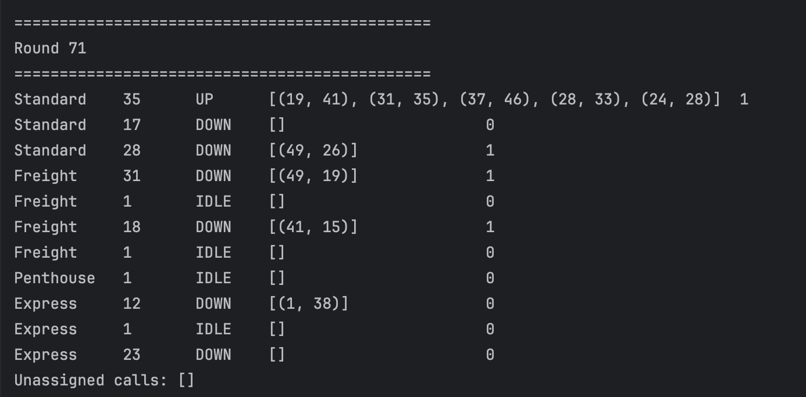

Hello! I'm from Las Vegas, Nevada, currently getting my computer science degree at University of San Diego.
Computer science has taught me a lot, but I also feel like I don't know enough at the same time. It is my intention to study computer science fields I'm interested in, an example being object oriented programming. It is also my intention to study cybersecurity and cybersecurity engineering, because that is the field I plan to enter after graduation.
My hobbies include reading, sketching, and crocheting. I would like to get into knitting but, it takes far longer than crochet and I'm not sure I have that kind of patience.
Projects

Birthday Paradox
The birthday paradox is essentially, if you have a bunch of people in a room together, what is the likelihood that two of them share a birthday. The more people in the room, the larger that probability grows. This project was created to simulate that phenomenon.
Using groups of people increasing by five (5, 10, 15,...,100), and each person having 20 trials, we get a result as to what the percentage is of people in each group that had a repeat birthday. It takes a random number generator, picking a number between 1-365, simulating the days of the year. It then
I was responsible for cleaning up the code and making it more understandable for the reader. One of my groupmates isn't versed in Java, so after she gave her ideas I looked over it and adjusted it so that the format was in Java. There were also some portions regarding how to get the month and the day, due to the fact that we could only use one randomizer and we had decided to use that randomizer to just pick one day out of the entire year (1-365). I took inspiration from an algorithm that my other group member shared, who suggested to utilize the end days of each month, then subtract that from the randomDay chosen to get the day of the month. To get the month, if it was less than the end day of that month, then the month was equal to the ordinal value plus 1. We used enum to create the endpoints for the months, and we add one because ordinals start at 0. I was also responsible for creating the tester code for the Birthday class.
Through this project I learned how to utilize the Enum class better, and how to pass on results from class to class. If I were to do this again, I would create a sort of graph that would provide an easier understanding of the data. I would also have it print out the random birthday that was chosen. I enjoyed this project, but I do think that I also could've done better with coming up with ideas and doing things on my own. This project showed me that I still have a lot to learn in this field, and I can't wait to get started.

Elevator Simulator
The Elevator Simulator simulates multiple elevatorsThe Elevator Simulator simulates multiple elevators simulating calls within a building. There are four different elevators: Penthouse, Standard, Express, and Freight. Each elevator has their own behaviors and limitations that they must abide by. There are also two different types of schedulers: Simple and Complex. These schedulers help pick which elevator is a best fit to service which call, and each call consists of a start floor and end floor. Through both the use of the elevators and the schedulers, the code will run rounds of a simulation, detailing which elevators serviced which calls throughout the building.
The user gets to input seven arguments into the command line: the number of floors, what type of scheduler to use (-c for complex and -s for standard), the number of standard elevators, the number of freight elevators, the number of penthouse elevators, the number of express elevators, and the file name of the initial calls. After running this program, the end result is a series of rounds that specify which calls are serviced by which elevators, and will continue creating rounds of the simulator until all of the calls have been serviced. The user plays an active role in how this plays out, as changing just one argument can change the entire result.
We first started out with a UML diagram to divide up each element of the project. For example, the Scheduler was it's own class, and was then used by the other two classes for the Complex Scheduler and the Standard Scheduler. It was important for us to make sure that each class had a very defining role, and only handled the business that it was supposed to. For Direction, we created an ENUM with the three direction types (UP, DOWN, IDLE), so that if there was any other direction added, we wouldn't have to change a bunch of code in several other classes, we would just have to add it to the enum. This was also repeated with the parent classes Elevator and Scheduler, as well as with all of their child classes. We designed this so that the parent classes outlined the function of the item in general, and the child classes got more specific while still inheriting the base features from the parent.
I was responsible for implementing the elevators, as well as their tests. All of the elevators took in functional elements from their parent Elevator, but each one had different requirements and limitiations, like where they were allowed to go, when they were allowed to change direction, how many people could be on that elevator at a given time. I had to work with my partner a lot on this section, because I would consistently look at his side of code and make sure that what I was representing in my elevator classes was also being represented in his classes, so that there weren't any problems when we tried to run it. An example of this would be when I was trying to implement a top floor and a bottom floor, most notably for the Penthouse Elevator, as that elevator is only allowed to service the top and bottom floors. There wasn't any mention of either of these specific floors mentioned anywhere in the code, so I had to check with him to see if I had to change my code or if he had to adjust his to accommodate.
Through this project I learned about the importance of collaboration. I definitely don't think that I would have gotten through this if it weren't for my partner and his input. There were multiples times where I would be confused on how some of the instruction is worded or why he implemented a method in the way that he did, so his ability to explain to me what was going on and why he made that decision was very valuable to me. It also showed me that I have a lot left to learn. I have found that I'm better at the theory portion, but when it actually comes to coding I'm much slower in that regard, so that is something that I plan to work on both inside and outside of the classroom.
Contact Me
zharriscole@sandiego.edu